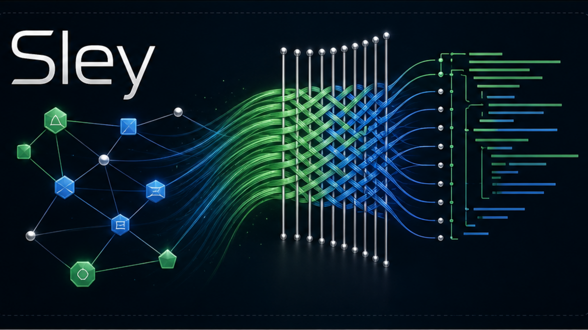

What It Is
Sley is a new programming language from Greyforge Labs built around one hard premise: future agent-written software needs a safer control surface than blind text mutation.
Human reviewers still need readable source. Agents need typed structure, bounded inspection, deterministic checks, explicit authority, repairable diagnostics, and evidence after accepted change. Sley is the language layer designed around that loop.

Current State
| Track | Public Status |
|---|---|
| Name | Sley, the language. Loom, the bootstrap compiler and strict oracle. |
| Development phase | Active v0 prototype. The internal surface has expanded significantly and remains in private iteration. |
| Evidence posture | The current internal conformance suite tracks 210 integration cases, contract fixtures, smoke manifests, schema snapshots, and local CI/contract helper surfaces. |
| Runtime posture | Host authority is modeled explicitly. v0 host paths are deterministic test gates, not live provider, payment, shell, network, secret-store, or deployment integrations. |
| Public availability | The implementation, full specification, grammar, fixtures, and executable examples are not open source yet. |
| Claim boundary | Sley is not production-stable and should not be described as a replacement for mature general-purpose languages today. |
Design Doctrine
Source Is For Review
The text projection stays compact enough for people to understand, audit, and discuss.
Structure Is For Work
Agents should operate on compiler-exposed structure instead of guessing where raw text spans begin and end.
Authority Is Explicit
Dangerous or external capabilities belong at clear task boundaries, not hidden inside incidental library calls.
Preview Before Change
Candidate edits should be inspectable and checkable before any source mutation is accepted.
Diagnostics Must Teach
The compiler should return stable, repairable feedback that helps an agent recover without private chat context.
Evidence Should Remain
Accepted changes should be able to leave provenance, verification, and handoff artifacts when the work warrants it.
Public Capability Map
| Capability Class | What Can Be Said Publicly |
|---|---|
| Reading and normalization | Sley has a compiler path for reading, normalizing, checking, and presenting supported v0 programs. |
| Structural inspection | The compiler exposes bounded structural views so tools can inspect relevant program regions without treating the whole project as anonymous text. |
| Query and hygiene | Internal reports summarize declarations, calls, authority, style, lint, and readiness surfaces for agent and CI workflows. |
| Planned editing | The language is being built around compiler-checked structural edit candidates rather than arbitrary textual patches. |
| Verification | Verification combines strict compiler checks, warning policy, deterministic runtime gates, and reproducible local package evidence. |
| Trace and handoff | Accepted changes can be represented with provenance and content-addressed evidence suitable for later review or archival handoff. |
| Project scaffolding | The private toolchain can create deterministic starter projects for pure, deploy-like, and agent-like workflows without touching live external systems. |
Protected Until Source Release
Held Back
- Complete language grammar and syntax examples.
- Exact command recipes, flags, and invocation sequences.
- Schema identifiers, JSON payload shapes, and fixture contents.
- Structural edit operation inventory and acceptance rules.
- Compiler internals, module resolution details, and repair algorithms.
- Self-hosting ladder details and future runtime lock mechanics.
Safe To Publish
- The problem Sley is designed to solve.
- The agent-native and human-reviewable product thesis.
- High-level evidence categories and current prototype status.
- The distinction between deterministic test gates and live integrations.
- Clear limits: private v0 work, not production-stable, not a general replacement today.
- Branding, public roadmap shape, and links to Greyforge and ZJX.
Why It Matters
Most programming languages were designed around humans writing text and tools checking the result after the fact. That does not match the way autonomous coding agents fail. Agents lose local context, over-edit unrelated spans, repair one issue while breaking another, and need stable machine-readable surfaces to recover.
Sley tries to move the edit boundary closer to the compiler. The useful public claim is not that Sley has magic syntax. The useful claim is that language design, compiler output, diagnostics, runtime gates, and evidence artifacts can be organized around agent success rate.
Sley And ZJX
Sley and ZJX are related but distinct Greyforge systems. Sley is the programming language. ZJX is the archive and handoff lane. The public Sley page describes the language direction; the public ZJX page describes the current archive prototype.